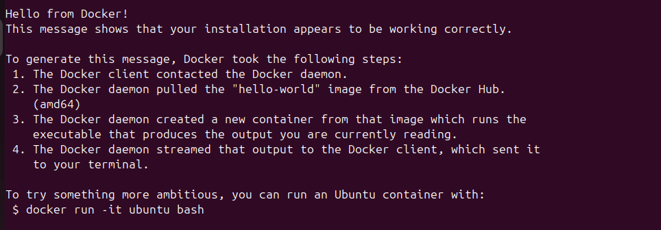
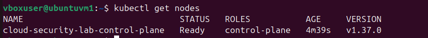
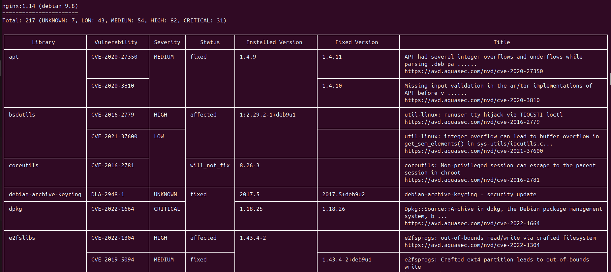
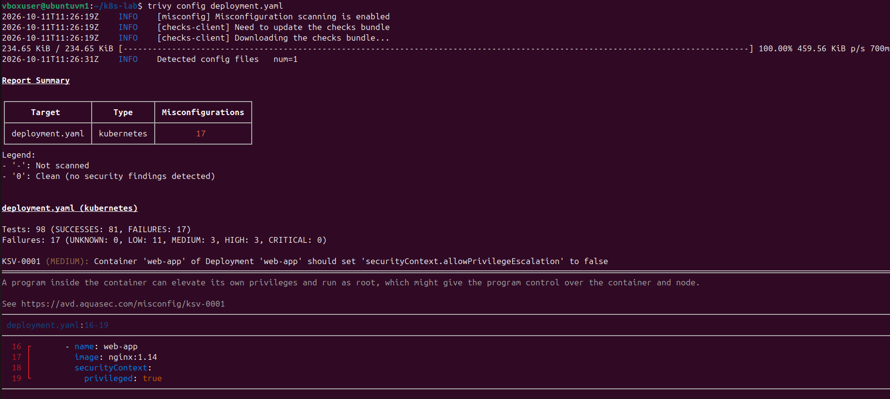
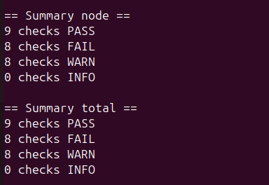
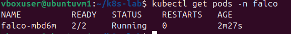
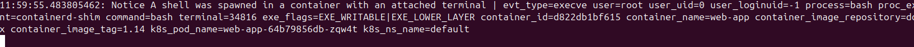

Summary
Every case file so far has secured a different layer — identity (Case 001), the host (Case 002), file activity (Case 003), the endpoint (Case 004), the application pipeline (Case 005), and the infrastructure blueprint (Case 006). This one moves to where most companies are actually running their workloads now: containers, orchestrated by Kubernetes. It follows the same shift-left logic as Cases 005 and 006 — scan the image and the deployment config before anything runs — then goes a step further most of those projects didn't: it deliberately attacks the running container afterward, to prove that if a misconfiguration does slip through, something is actually watching at runtime to catch it.
Environment and stack
- Cluster: kind (Kubernetes IN Docker) — a lightweight local Kubernetes cluster, chosen over minikube for its smaller resource footprint
- Image & config scanning: Trivy — scans both the container image for known CVEs and the Kubernetes YAML for misconfigurations
- Cluster hardening audit: kube-bench — checks the cluster against the CIS Kubernetes Benchmark, the industry-standard security checklist
- Runtime detection: Falco — watches live syscalls inside running containers and alerts on suspicious behavior, installed via Helm
Phase 1: Standing up the cluster
Docker and a local kind cluster first, confirmed healthy before layering any security tooling on top:


Phase 2: Scanning before anything runs
Before deploying anything, I scanned two separate things: the container image itself (what vulnerabilities are baked into the software), and the Kubernetes deployment manifest (how the container is configured to run). I deliberately used an old, unpatched nginx:1.14 image and wrote a manifest with a realistic, common mistake — securityContext.privileged: true, which gives a container full access to the host.
Image scan: Trivy found 217 known vulnerabilities in the image — 31 CRITICAL, 82 HIGH, 54 MEDIUM, 43 LOW. It also flagged something easy to miss just by looking at a running container: the underlying OS is Debian 9.8, which is past end of life — no longer receiving security updates at all, meaning every new vulnerability found in it from here forward will never be patched upstream.

Config scan: scanning the deployment manifest itself (not the image) turned up 17 misconfigurations from that single privileged: true line — no privilege escalation protection, a mutable root filesystem, default root access, missing resource limits, no seccomp profile, and more. One careless setting in a YAML file ripples out into over a dozen distinct, named security gaps.

privileged: true setting.Phase 3: Auditing the cluster itself
Scanning the image and the manifest covers what you're deploying — kube-bench covers something different: whether the cluster itself is configured securely, checked against the CIS Kubernetes Benchmark. The result: 9 checks passed, 8 failed, 8 warned on a completely default, freshly-created local cluster.

The two most significant failures: --anonymous-auth was not set to false (the kubelet accepts unauthenticated requests), and --authorization-mode was set to AlwaysAllow (any request that does get through is automatically authorized, with no RBAC check at all). Together, those mean the kubelet API doesn't require valid credentials, and wouldn't enforce permissions even if it did. The remaining failures were file permission and ownership issues on the kubelet's own config files — less severe on their own, but still more exposed than they should be if someone gets local access to the node.
Phase 4: Deploying for real and catching a live attack
With the scans done, I deployed the misconfigured pod to the cluster anyway — on purpose, in a disposable local lab — specifically to see what detection looks like when a misconfiguration is actually exploited, not just flagged on paper. I installed Falco via Helm as a runtime security layer watching the cluster's live syscalls, then simulated exactly what an attacker does after breaking into a container: got an interactive shell inside the running pod with kubectl exec -it ... -- /bin/bash.

The moment the shell was spawned, Falco caught it in real time:

The alert itself is worth reading closely, because every field tells part of the story: parent=containerd-shim shows the shell's parent process is the container runtime, not the running application — the signature of someone exec-ing in from outside rather than the app spawning its own shell. user=root, user_uid=0 ties straight back to the privileged: true misconfiguration Trivy and the config scan flagged earlier. And a terminal value being present confirms it was an interactive session — a human at a keyboard, not an automated script. Falco also named the exact pod, container, and namespace, which is what turns an alert into something a SOC analyst can actually act on.
Lessons learned
The strongest part of this project is how the four pieces connect into one chain rather than standing alone: a misconfigured container (caught pre-deployment by Trivy's config scan) was deployed anyway in this lab, exploited exactly the way the misconfiguration predicted, and caught again at runtime by Falco the moment it happened — defense in depth, not a single checkpoint. It also reinforced something true of Kubernetes specifically: a cluster can report every node as Ready and still fail more CIS benchmark checks than it passes, because secure defaults are not the default. Standing up a working cluster and standing up a secure cluster are two different jobs, and this project is what it looks like to actually check the difference rather than assume it.